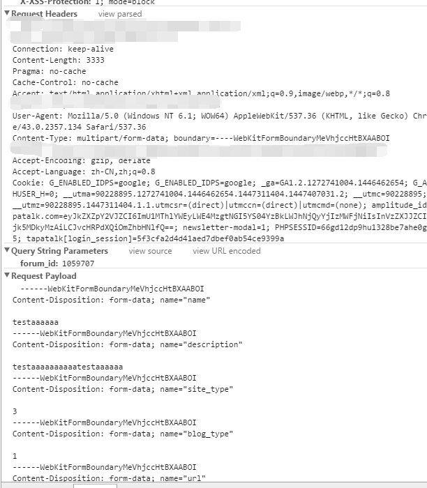

前端那些事儿 - 表单域的 MIME 编码
表单是我们在前端开发中最经常使用的 HTML 控件之一。表单可以用来提交用户输入的信息，比如用户名和密码，甚至用户的头像以及声音。但是这些信息的种类却多种多样，那么在表的单提交过程中浏览器是怎样处理这些用户信息的呢？
其实在用户提交表单时，浏览器会根据用户所提交表单的内容类型来对表单进行不同的编码。我们也称其为表单的 MIME(Multipurpose Internet Mail Extensions) 编码。MIME 翻译过来就是“多功能 Internet 邮件扩充服务”，它是一种多用途网际邮件扩充协议，最早在1992年应用于电子邮件系统，后来逐渐也应用到浏览器。服务器会将它们发送的多媒体数据类型告诉浏览器，而通知手段就是设置该多媒体数据的 MIME 编码类型，从而让浏览器知道接收到的信息哪些是 MP3 文件，哪些是 Shockwave 文件等。
相反的，浏览器在向服务器发送数据的时候也需要指定表单内容的 MIME 编码类型，但相对于服务器众多的编码类型，浏览器的 MIME 编码类型主要有三种：
- application/x-www-form-urlencoded；
- multipart/form-data；
- text/plain；
第一种 “application/x-www-form-urlencoded” 为浏览器默认的标准编码类型，用于编码常用的“键值对”数据，比如 radio、checkbox 以及 textarea 等表单元素的信息便可以用元素的 name 和 value 属性来组成“键值对”以表示数据。而第二种 “multipart/form-data” 主要用于编码文件类型的数据，即表单域里诸如 <input type="file"> 元素所提交的数据。而第三种 “text/plain” 则主要用于编码纯文本数据（不含表单元素的纯文本），并不常用。

当浏览器使用 “application/x-www-form-urlencoded” 编码以 GET 方式发送数据时，浏览器会用 “x-www-form-urlencoded” 的编码方式把表单域内的数据转换成一个字符串（类似：name1=value1&name2=value2 …），接下来把这个字符串通过“?”连接到整个 URL 的最后，然后来加载这个拼接后的 URL。当发送数据的方式为 POST 时，浏览器会把表单域的数据封装到 HTTP 请求的请求体中，并在请求头中指明请求内容的编码类型（Content-Type 字段）和请求体的数据分隔符（Boundary 字段）随后发送到服务器。对于请求头中的编码类型，如果表单域没有 <input type="file"> 控件，浏览器标注为 “application/x-www-form-urlencoded”。否则会标注为 “multipart/form-data”。

对于以 POST 方式发送的含有 <input type="file"> 控件的表单时，浏览器会把整个表单以控件为单位进行分割，并为每个部分加上 Content-Disposition (对应 form-data 或者 file 类型)，Content-Type (默认为 text/plain，或者为 application/octet-stream 八进制流，一般为文件类型)，name (各个控件的 name 属性)等信息，并为每一段控件的数据加上分割符 (Boundary)。
写在最后，别忘了当表单内部需要提交文件类型数据时别忘了在 form 便签内添加 enctype="multipart/form-data" 。